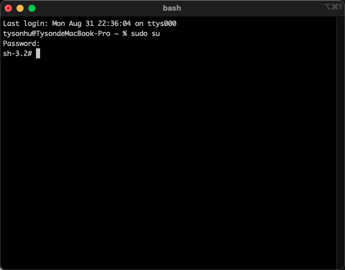
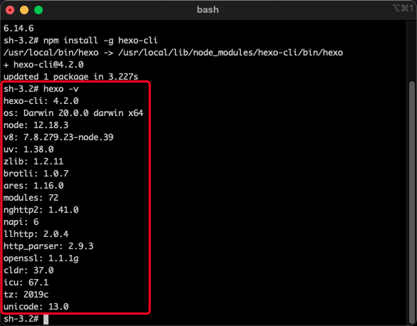
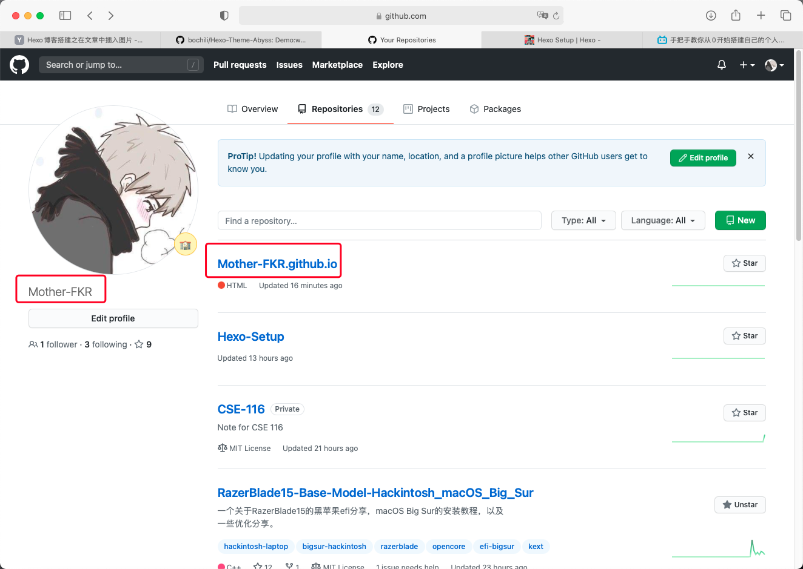
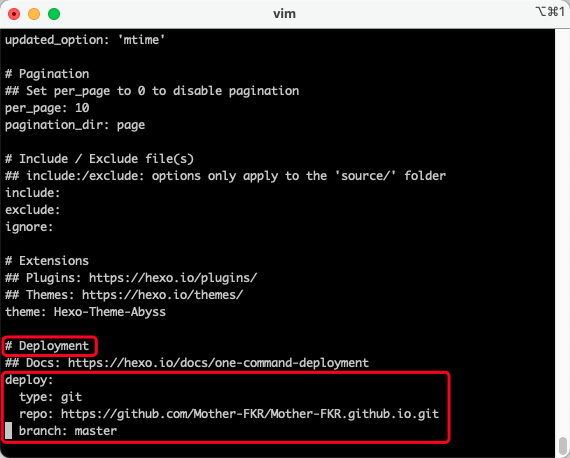
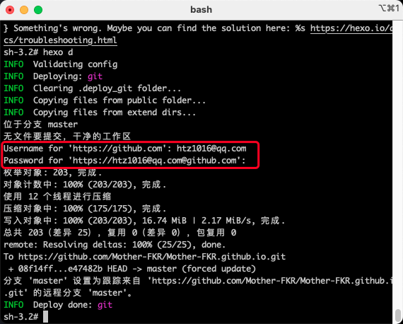

Hexo-Setup
本文基于程序羊（CodeSheep）在b站的发布的关于博客搭建的视频，以下均为学习笔记。
准备工作
下载：
- node.js
- iTerm
部署
打开 iTerm，输入 sudo su，输入密码以root身份运行。
如果出现 sh-3.2# 字样说明成功。

我们可以查看以下 node 和 npm 的版本以确保安装成功
分别为 node -v 和 npm -v，如果出现版本号则说明安装成功。
国内用户需安装 cnpm
输入以下指令即可：npm install -g cnpm --registry=http://registry.npm.taobao.org
安装完成后，输入 cnpm -v 查看 cnpm 版本以确保安装无误。
安装hexo框架
输入 npm install -g hexo-cli 以安装 hexo 框架
国内用户使用 cnpm 安装框架即可。
输入 cnpm install -g hexo-cli 以安装 hexo 框架
安装完成后，输入 hexo -v 查看 hexo 版本，以确保安装成功

生成博客
输入 mkdir blog 以创建一个名字为blog的文件夹，文件夹名字没有要求，可以随便起，这里只是为了方便记忆。
输入 cd blog 进入 刚创好的 blog 文件夹。
不确定位置在哪的可以使用 pwd 来查看文件位置。
输入 sudo hexo init 初始化博客 / 生成博客
完成后输入 hexo s 启动本地博客
启动完成后，浏览器输入 http://localhost:4000/ 即可看到生成的博客
线上博客部署(免费)
打开你的 GitHub，创建一个与你用户名同名的io库：
举例：
用户名： abc ➡️ 库名： abc.github.io

创建后转到 iTerm：
输入 npm install --save hexo-deployer-git 安装git部署插件
国内用户输入：cnpm install --save hexo-deployer-git 安装git部署插件
安装完成后输入 vim _config.yml 打开 _config.yml 文件
打开文件后，直接跳转到最下面，在 Deployment 菜单下输入图中的参数，
并把 repo 的内容改为自己刚创建的 repo 的地址。

修改完成后按 esc 键退出编辑模式，并输入 :wq 保存&退出 _config.yml
输入 hexo d 将本地的博客推到你的GitHub库中
系统会要求你输入GitHub的用户名和密码，输入即可：

至此你的本地博客已经挂到GitHub上，现在即可进行远程访问。